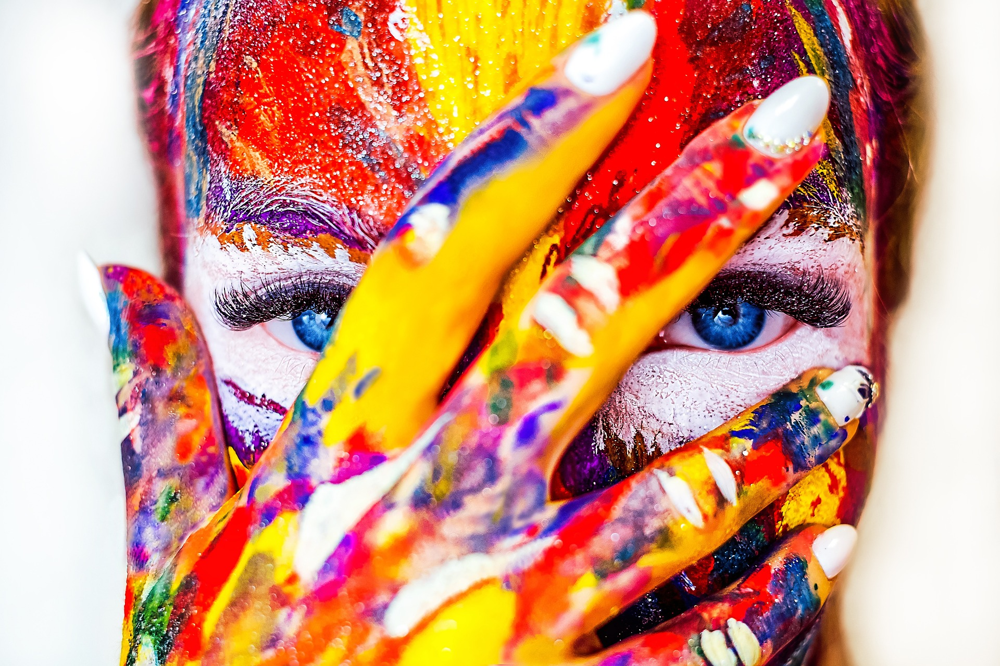
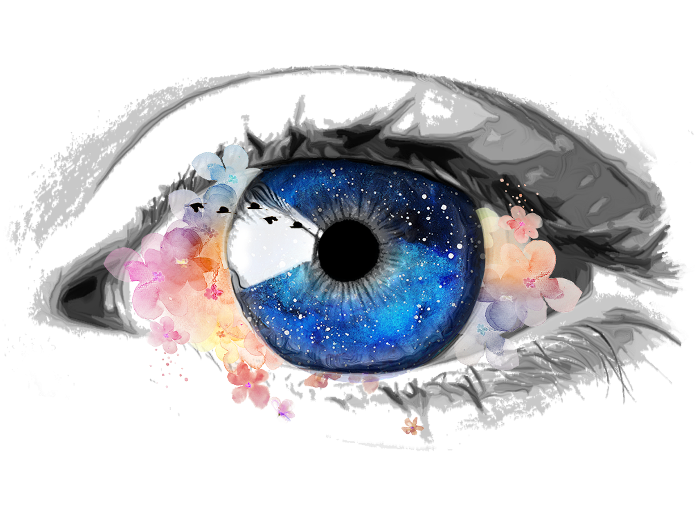

I have always been drawn to natural photography, which could be rooted in my love for the natural world. Growing up I watched National Geographic and I always wanted to showcase our beautiful planet through photography. All of the pictures captured in this photobook were with an iPhone camera and minimal editing. The theme of the photobook is following the lyrics of the song "Bloom".
Through my Entreprenuerial Marketing internship with Sol Vae, I learned how to do porduct videography. The main goal of the first video was to capture the feeling of woman empowerment when it came to the brand. The second video was a packaging video positioning the brand as a sustainable Hawaiin company.
Through my work as a Social Media Consultant for a Boulder restaurant called Verde, I use videography to position the restaurant as a "Boulder Bucket List Item" and tried to bridge the gap between CU Boulder's campus and the restaurant since it was located off campus. After creating these marketing promo videos, I was able to drive traffic from CU students into the restaurant.
In my free time, I enjoy making travel videos. It feels like I'm able to honor my trips and the places I visit by creating videos that showcase their wonder.
I have basic knowledge of developing virtual realities with equirectangular images and 3D models.